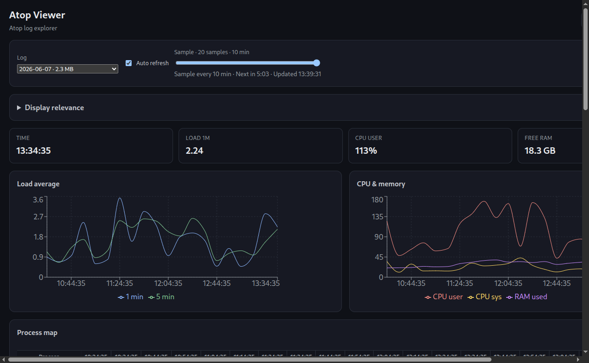

Beta · Linux desktop · MIT
Atop Viewer
Desktop GUI for Linux atop historical logs — not a browser app.
Explore daily atop logs with charts, live refresh,
process tables, and timelines. Uses atop -r -J on your machine — data never
leaves your system.
Loading version…

Features
- Time slider across atop samples (load, CPU, memory)
- Process table with live / terminated / PID-reused status
- Live mode when atop writes new samples
- Process heatmap, stack, and lifecycle views
- Configurable CPU filter and ES/EN UI
- Local-only — no upload server
How it works
/var/log/atop/atop_YYYYMMDD → atop -r LOG -J JSON → Atop Viewer
Requires atop installed (sudo apt install atop). Does not parse
binary logs in the browser and does not need atop -P.
Download
Linux amd64 · requires atop on the system.
Loading installers…
Install on Ubuntu / Debian
sudo dpkg -i ~/atop-viewer-VERSION-amd64.deb
sudo apt -f install # if needed
atop-viewer
Prefer dpkg -i when the file is in $HOME. Replace VERSION with
the downloaded beta tag.
Other Linux distributions
chmod +x atop-viewer-VERSION-x86_64.AppImage
./atop-viewer-VERSION-x86_64.AppImagePortable AppImage — still needs atop and often libfuse2.
Limitations (beta)
- Linux desktop only (Electron), not a web UI
- Reads system atop logs under /var/log/atop by default
- Live refresh bounded by atop LOGINTERVAL (often 10 min)
- amd64 installers; beta APIs may change
Roadmap
- Open user-selected log files
- Disk and network charts
- Export CSV/JSON
- Stable 1.0 after wider testing